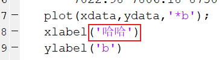
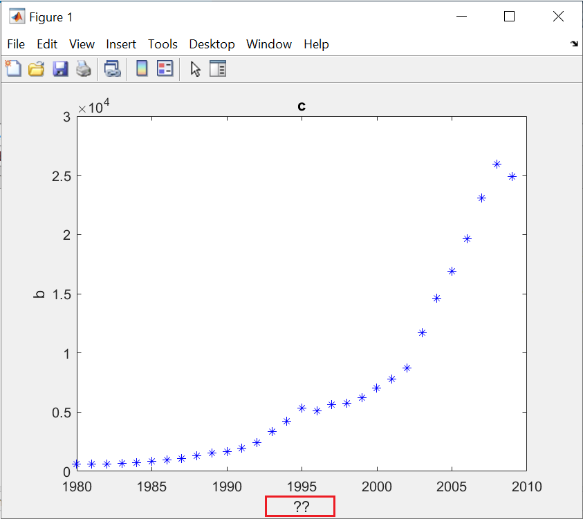
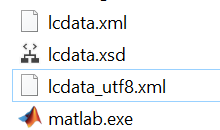

Matlab中文编码问题

文章目录
内置编辑器中文内容保存后再打开变为乱码/问号(?) 画图时中文标题显示为乱码/问号(?)
系统环境
- Matlab R2019b
- Windows 10
- 系统语言是英文
现象
- 原本写的时候是这样：
 原来的样子
保存一下关闭Matlab再打开，唔！竟然变成了这样：
问号？？？
或是这样：
乱码？
- 使用plot函数画图，结果是这样：
 又是问号？？？
或是这样：
乱码？
- 在
Matlab命令窗口中输入命令feature('locale')，输出是这样：1 2 3 4 5 6 7 8 9 10 11 12 13struct with fields: ctype: 'en_US.windows-1252' collate: 'en_US.windows-1252' time: 'en_US.windows-1252' numeric: 'en_US_POSIX.windows-1252' monetary: 'en_US.windows-1252' messages: 'en_US.windows-1252' encoding: 'windows-1252' terminalEncoding: 'GBK' jvmEncoding: 'Cp1252' status: 'MathWorks locale management system initialized.' warning: 'System locale setting, zh_CN, is different from user locale setting, en_US.'注意
windows-1252编码。
info
如果你在Matlab内置编辑器中无法输入中文，或显示为方框，那应该是设置的字体不支持中文，与本文内容无关。
解决办法
- 找到你的
Matlab的安装目录，可以通过右击Matlab图标，选择“打开文件夹位置”查看。在我这里是C:\Program Files\MATLAB\R2019b\bin。 - 此目录下应该有一个
lcdata.xml文件，和一个lcdata_utf8.xml文件。
下面还有很多行
找到这个：
|
|
将其删除。再找到这个：
|
|
将其改成
|
|
- 重启
Matlab，问题是不是都解决了呢？注意此时feature('locale')命令的输出：1 2 3 4 5 6 7 8 9 10 11 12 13struct with fields: ctype: 'en_US.UTF-8' collate: 'en_US.UTF-8' time: 'en_US.UTF-8' numeric: 'en_US_POSIX.UTF-8' monetary: 'en_US.UTF-8' messages: 'en_US.UTF-8' encoding: 'UTF-8' terminalEncoding: 'GBK' jvmEncoding: 'UTF-8' status: 'MathWorks locale management system initialized.' warning: 'System locale setting, zh_CN, is different from user locale setting, en_US.'
原理
其实就是将windows-1252编码（不包含中文字符编码）原本的信息删除，并让Matlab误以为windows-1252是UTF-8（包含中文字符编码）的一个别称罢了！
延申
若是原先feature('locale')命令的结果中不是windows-1252编码，而是GBK或其他编码，可以类似处理。
参考资料
英文操作系统，MATLAB编辑器保存与显示中文乱码的两种情况和解决方法 - CSDN